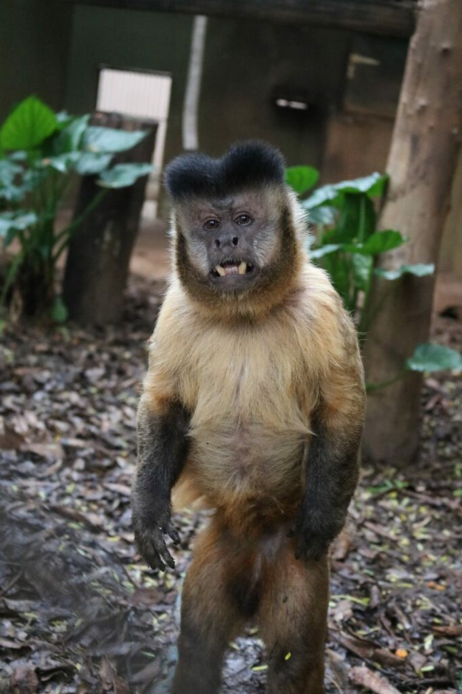

macacos-prego

-
No Brasil, o macaco prego é encontrado na região norte, centro-oeste e parte do nordeste brasileiro, habitando regiões de bosques e florestas, sendo mais tolerantes a habitats menos preservados do que qualquer outra espécie de Cebus.
Frequentemente descem das árvores para forragear e brincar. A cauda é longa e preênsil. São animais diurnos e vivem em grupos, podendo ter até 40 indivíduos.Esse número pode variar, dependendo do local, podendo ter número bem menores, de cerca de 5 indivíduos, em de florestas e bosques mais isolados.